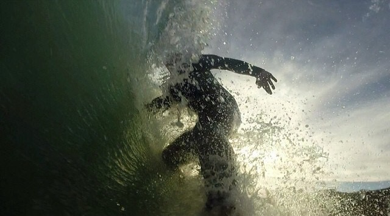

I have held many jobs ranging from a lifeguard to a barista. As a barista, I became friends with many customers, some of which were Web Developers. At this time in my life, I was in sort of a limbo, I was waitlisted for two semesters as I was trying to apply to nursing schools and I was starting to look for a Plan B. Many of my customers suggested I look into Front End Web Development.
Developed a multi-column layout blog, landing page, and contact forms that render on mobile devices.
